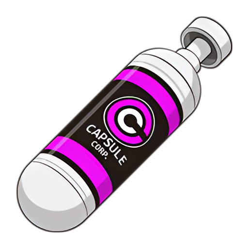
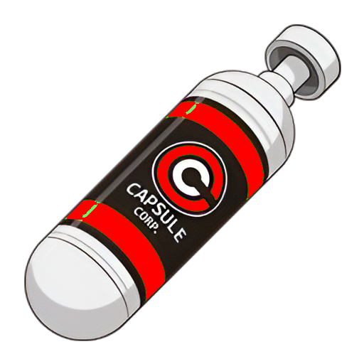
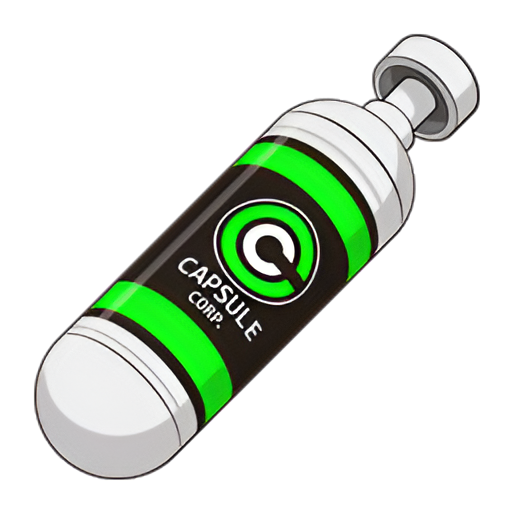

Perfil profesional
.NET Fullstack
Actualmente me desempeño como Desarrollador Backend SSR en MICRACEL / MICROTRACK, donde aplico Azure, IA, .NET y SQL Server. En paralelo trabajo como desarrollador autónomo desde marzo de 2025 y soy Técnico Universitario en Programación por la UTN.
Actualidad
Azure, IA, .NET y SQL Server aplicados a desarrollo backend de negocio.
Me interesa construir soluciones tecnológicas concretas, optimizar procesos y aportar valor desde una base técnica sólida.
Aptitudes principales
- Azure DevOps Server.
- Web Services API.
- Blazor, Azure y SQL Server.
- C#, .NET y API REST.
- Scrum y Kanban.
Extracto
Me motivan los proyectos innovadores, el trabajo colaborativo y la optimización de procesos.
Extracto profesional
Hoy me desempeño como Desarrollador Backend SSR en MICRACEL / MICROTRACK, donde contribuyo al desarrollo de soluciones tecnológicas mediante Azure, IA, .NET y SQL Server.
En paralelo trabajo de forma autónoma y busco seguir aportando en proyectos donde pueda implementar soluciones efectivas y optimizar procesos con criterio técnico.
Posicionamiento actual
- Backend .NET con foco en APIs, SQL Server y servicios.
- Experiencia actual en contextos empresariales y de producto.
- Trabajo independiente activo desde marzo de 2025.
- Formación UTN | Técnico Universitario en Programación.
Sobre mí
Mi perfil está enfocado en backend, con la flexibilidad suficiente para moverme también en web, mobile y desktop.
Base profesional
Soy Técnico Universitario en Programación por la Universidad Tecnológica Nacional y tengo experiencia en desarrollo backend, además de participación activa en soluciones tecnológicas orientadas a negocio.
Core técnico
- C#, .NET y API REST.
- SQL Server y Web Services API.
- Azure, Azure DevOps Server e IA aplicada.
Complementos
- Blazor y desarrollo web.
- Trabajo en equipo y optimización de procesos.
Experiencia
Trayectoria profesional presentada como piezas serias, no como popups aislados.

Oct 2024 - Actualidad
MICRACEL / MICROTRACK
Desarrollador Backend SSR
Neuquén, Provincia de Neuquén, Argentina. Azure, IA, .NET y SQL Server aplicados al desarrollo de soluciones tecnológicas.
Mar 2025 - Actualidad
Autónomo
Desarrollador independiente
Provincia de Buenos Aires, Argentina. Desarrollo independiente en paralelo a la actividad principal.
Mar 2024 - Oct 2024
VASILE Y CIA
Desarrollador de Software
Villa Rosa, Provincia de Buenos Aires, Argentina. Desarrollo, mejora y mantenimiento de soluciones de software.Qué aporto hoy
Hoy combino backend de negocio, tooling moderno y capacidad para extenderme a otras capas cuando hace falta.
Backend y servicios
Desarrollo sobre C#, .NET, API REST, Web Services API y SQL Server para construir soluciones estables y orientadas a negocio.
Cloud, procesos y delivery
Uso de Azure, Azure DevOps Server e IA como parte del trabajo actual para impulsar procesos tecnológicos más efectivos.
Capas complementarias
Además del backend, también trabajo con Blazor para desarrollo web y mobile (.NET MAUI), para resolver necesidades de interfaz o prototipado cuando el proyecto lo requiere.
Tecnologías
Estas son las tecnologías con las que trabajo hoy y que mejor representan mi experiencia reciente.
Backend
C#
.NET
API REST
Web Services API
Azure Services
SQL Server
Cloud
Azure
Netlify
Frontend y apps
Blazor
MAUI
HTML
CSS
Javascript
Desktop
Estudios y contacto
Acá dejo mi formación y mis canales de contacto para que el recorrido cierre de forma directa y profesional.
Formación
Universidad Tecnológica Nacional. Técnico Universitario en Programación.
Mayo 2022 - Diciembre 2025.
Contacto
Estos son mis canales actuales para contacto profesional y seguimiento de mi trabajo.